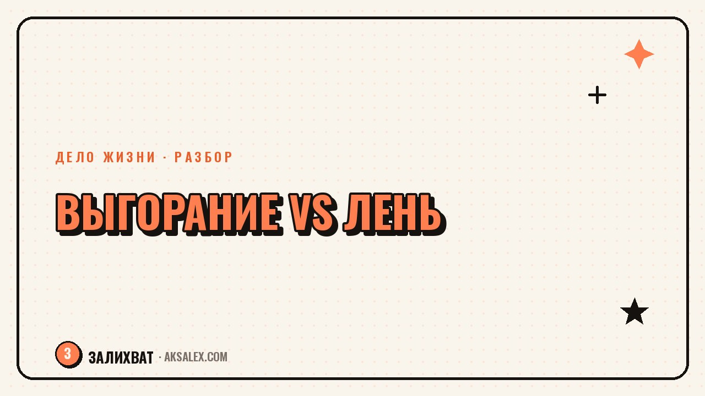

Выгорание или лень: как отличить и что делать

Сидишь над задачей, которая раньше давалась легко, и ничего не выходит. Первая мысль - «я выгорел». Вторая, более стыдная - «я обычная ленивая скотина». На деле оба слова используют слишком широко, а состояния за ними очень разные по причинам и по тому, что с ними делать. Разберём конкретные отличия, а не общие фразы про «прислушайся к себе».
Почему это легко перепутать
И выгорание, и лень выглядят снаружи одинаково: не хочется начинать, откладываешь, раздражаешься на напоминания о задаче. Разница не в том, что ты делаешь, а в том, что происходит внутри до и после попытки начать. Это ключевое отличие, за которым стоит следить.
Ошибка в диагнозе дорого стоит в обе стороны. Если назвать выгорание ленью, человек давит на себя ещё сильнее и ухудшает состояние. Если назвать обычную прокрастинацию выгоранием, легко оправдать бездействие там, где на самом деле нужен один конкретный шаг, а не отдых на полгода.
Главные отличия в таблице
| Признак | Похоже на выгорание | Похоже на лень или прокрастинацию |
|---|---|---|
| Что чувствуешь при мысли о задаче | Пустота, равнодушие, иногда тошнота или тревога | Скука, раздражение, желание сделать что угодно другое |
| Что после отдыха | Выходные и отпуск не восстанавливают силы | После пары дней отдыха появляется энергия и интерес |
| Распространяется ли на всё | Безразличие касается и хобби, и того, что раньше радовало | Апатия именно к этой задаче, остальное по-прежнему интересно |
| Физические симптомы | Усталость даже после сна, частые головные боли, бессонница | Обычно отсутствуют или появляются только перед дедлайном |
Что происходит при настоящем выгорании
Выгорание - это истощение ресурса, который долго тратился без восполнения: много задач подряд без пауз, постоянное напряжение, ощущение, что от результата ничего не зависит. Оно развивается постепенно, и человек часто замечает его, когда ресурс уже на нуле, а не на старте спада.
Типичные сигналы
- Безразличие не только к работе, но и к тому, что раньше приносило удовольствие
- Ощущение, что любые усилия бессмысленны, результат всё равно не изменится
- Физическая усталость, которая не проходит после сна и выходных
- Раздражительность и цинизм там, где раньше была вовлечённость
Что происходит при обычной лени и прокрастинации
Прокрастинация чаще связана не с истощением, а со страхом или скукой перед конкретной задачей: боишься сделать плохо, задача слишком большая и непонятная с чего начать, или неинтересна совсем. Силы при этом есть - они уходят на что угодно, кроме нужного дела.
Если вечером после отложенной задачи остаются силы на сериал, хобби и разговоры с друзьями - это не выгорание. Ресурс есть, он только не хочет идти именно в эту задачу.
Отличить это легко по одному вопросу: появляется ли интерес и энергия, когда задача меняется на что-то другое, пусть даже на минуту. При лени и прокрастинации ответ почти всегда да.
Как проверить себя: вопросы для честного ответа
- Если бы задачу убрали прямо сейчас, появилось бы облегчение или пустота - разница важна
- Восстанавливают ли силы выходные, или усталость остаётся даже после полноценного отдыха
- Касается ли апатия только этой задачи или распространилась на хобби и общение с близкими
- Сколько месяцев или лет длится это состояние без пауз - разовая усталость и хроническое истощение решаются по-разному
Если большинство ответов указывают на истощение, которое не проходит после отдыха и касается многих сфер жизни, стоит рассмотреть разговор со специалистом - психологом или врачом, который сможет оценить состояние подробнее, чем любая статья.
Что делать дальше в каждом случае
При признаках выгорания первый шаг - не геройство и не ещё один рывок, а снижение нагрузки и честный разговор с собой о том, что можно отложить или передать другому. Это требует времени, а не одного выходного дня, и иногда помощи специалиста, если состояние длится месяцами.
При прокрастинации обычно помогает разбить задачу на маленький первый шаг, который не требует решимости - не «написать статью», а «открыть документ и написать один абзац». Энергия на это почти всегда находится, потому что дело не в истощении, а в размере и неясности задачи.
Частые вопросы
Как отличить выгорание от обычной лени
Главное отличие - распространённость и реакция на отдых. Выгорание касается многих сфер жизни и не проходит после выходных, а лень обычно ограничена одной конкретной задачей и отступает, если переключиться на что-то другое.
Может ли лень быть первым признаком выгорания
Да, на ранней стадии состояния действительно похожи. Если нежелание работать держится неделями, сопровождается усталостью после сна и безразличием к обычным радостям, стоит отнестись к этому серьёзнее, чем к обычной прокрастинации.
Нужно ли идти к психологу при подозрении на выгорание
Если состояние длится несколько месяцев, затрагивает разные сферы жизни и не проходит после отдыха, разговор со специалистом поможет точнее оценить ситуацию и подобрать подходящую помощь, чем самостоятельная попытка разобраться.
Почему я откладываю дело, которое люблю
Чаще всего причина не в самом деле, а в размере задачи или страхе сделать недостаточно хорошо. Разбивка на маленький конкретный первый шаг обычно снимает большую часть сопротивления.
Сколько времени нужно на восстановление после выгорания
Сроки сильно индивидуальны и зависят от глубины истощения и возможности снизить нагрузку. Это не вопрос одного отпуска - важнее системно убрать то, что привело к истощению, иначе состояние вернётся снова.
Раз тема оказалась полезной, вот что почитать следующим. Деньги от дела пропали не навсегда - но сначала нужно понять, в чём именно причина, а не бросать всё в панике.
Читать статью →а не вручную